01ត្រីស័ព្ទ «៊» · The whiskerត្រីស័ព្ទ
«៊» (សញ្ញាត្រីស័ព្ទ) ដាក់ពីលើព្យញ្ជនៈពួកអ ធ្វើឱ្យវាក្លាយសំឡេងពួកអ៊។
The whisker ៊ sits on an a-family letter and flips its sound to the â-family.
Diacritics I — the whisker ៊ and crown ័ · មេរៀនទី ៨ · Lesson 8 of ភាសាខ្មែរ កម្រិត ១
វណ្ណយុត្តិជាសញ្ញាបន្ថែមពីលើព្យញ្ជនៈ។ «៊» ប្តូរសំឡេងទៅពួកអ៊ «័» នាំសំឡេងពាក្យបាលី-សំស្រ្កឹត។
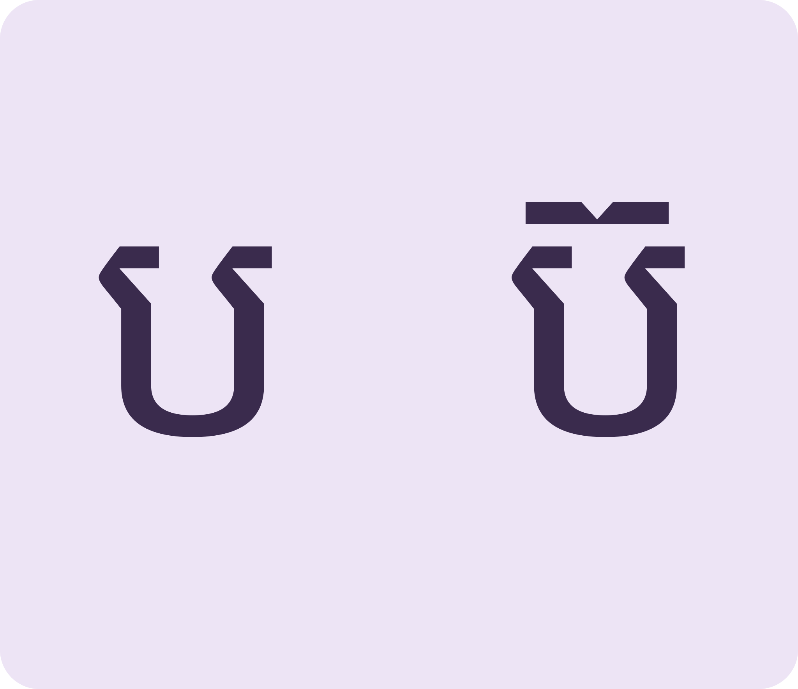
«៊» ធ្វើឱ្យក្លាយពួកអ៊៊ flips a letter to the â-family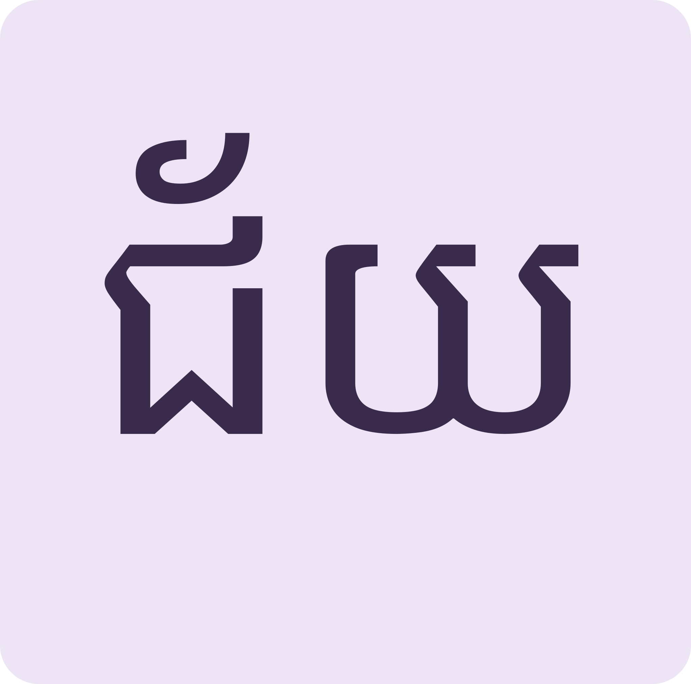
«័» សំឡេង «អ៎ៃ»ខ្លី័ gives the short crown vowel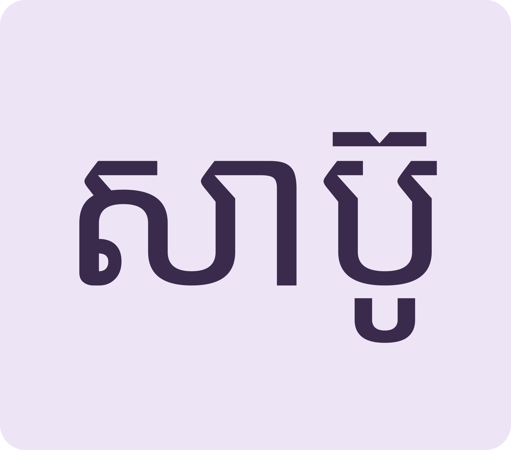
ពាក្យប្រើប្រចាំថ្ងៃEveryday words keep these marksAdd the whisker, add the crown, then keep the food safe with clean hands.
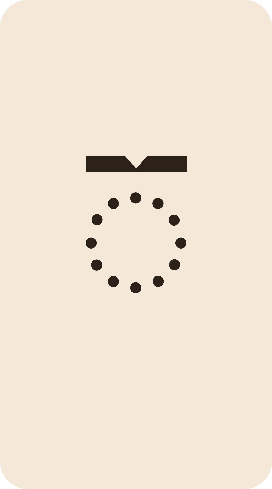
Space listen · ← → move · K show text
«៊» (សញ្ញាត្រីស័ព្ទ) ដាក់ពីលើព្យញ្ជនៈពួកអ ធ្វើឱ្យវាក្លាយសំឡេងពួកអ៊។
The whisker ៊ sits on an a-family letter and flips its sound to the â-family.
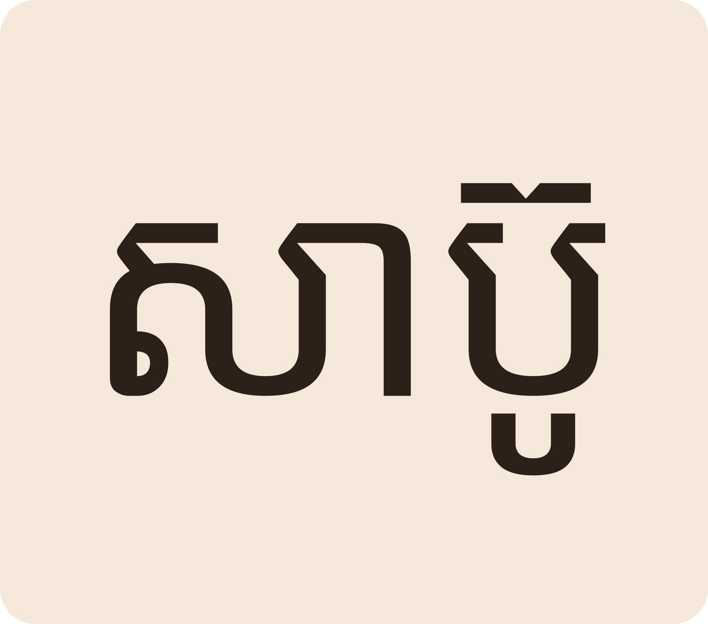
«សាប៊ូ» soap។ «យើងត្រូវលាងដៃនឹងសាប៊ូ មុនពេលញ៉ាំចំណីអាហារ»។
សាប៊ូ “soap”. Wash hands with soap before eating.
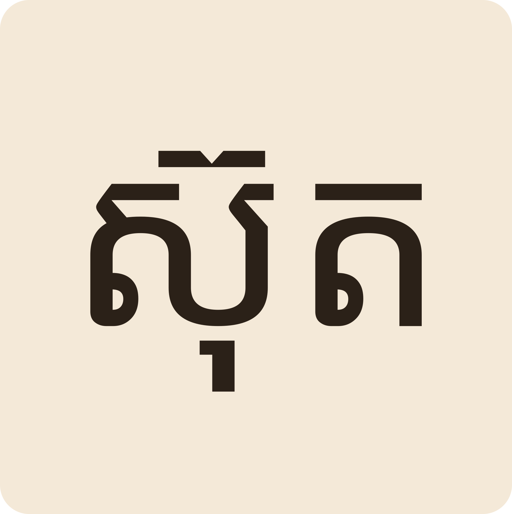
«ស៊ុត» egg។ មីងដែតទៅផ្សារថ្មី ទិញត្រីតៅហ៊ូ និងស៊ុត។
ស៊ុត “egg”. Aunti Daet buys dried fish and eggs at the new market.
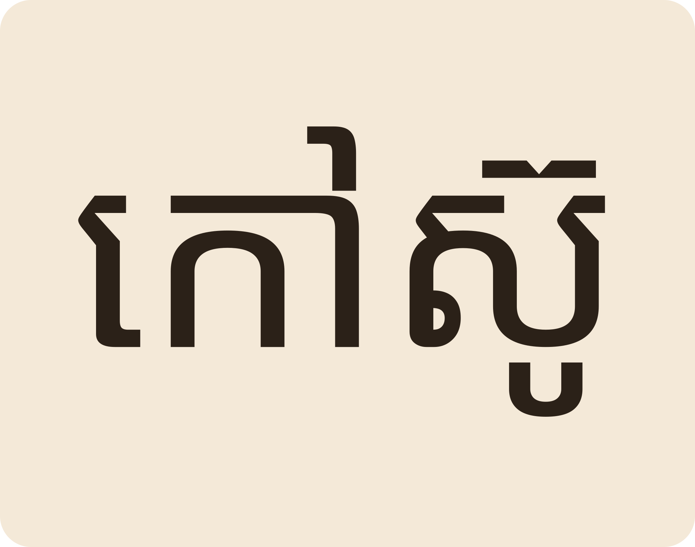
«កៅស៊ូ» rubber។ គ្រួសារតាអ៊ូដាំដំណាំកៅស៊ូ។
កៅស៊ូ “rubber”. Ta Ou's family plants rubber trees.
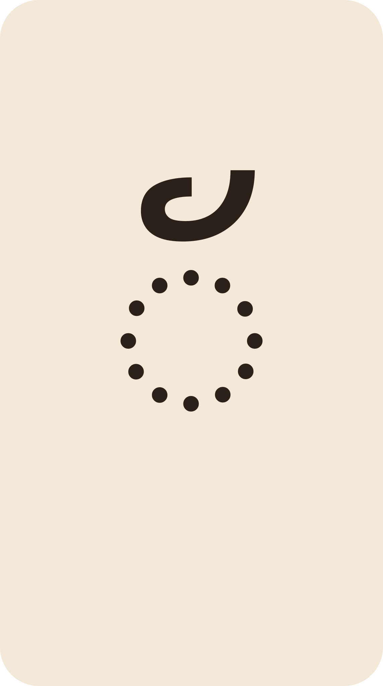
«័» (ម្តុសញ្ញាផាត់លើ) នៅពីលើព្យញ្ជនៈចុងពាក្យបាលី ដូចជា «ជ័យ» victory។
The crown ័ marks Pali-style endings: ជ័យ “victory”.
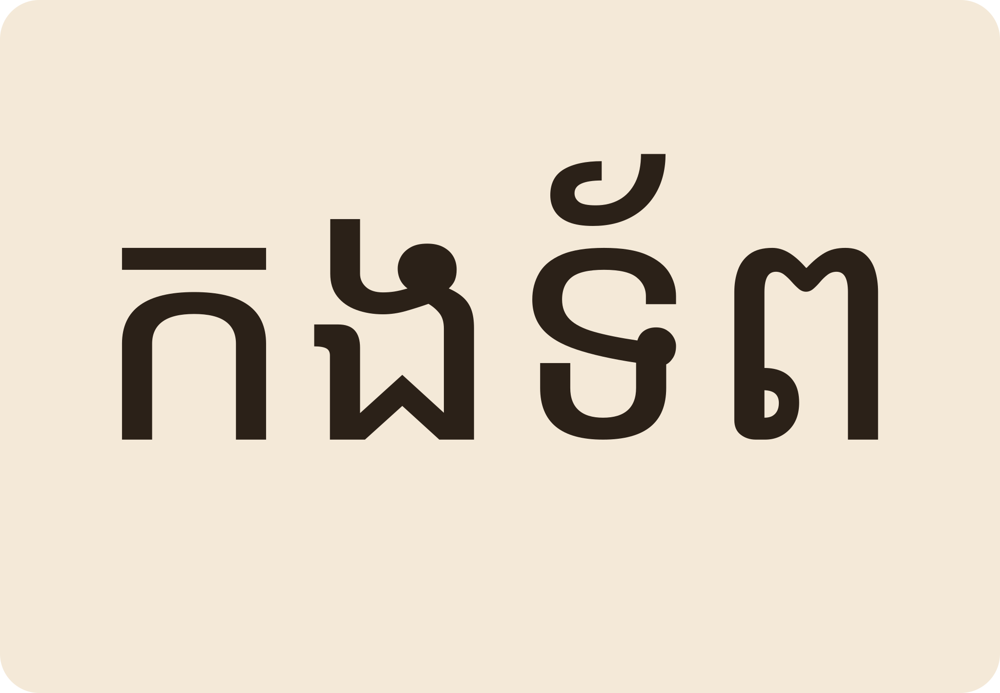
«កងទ័ព» army «ទាញព្រ័ត្រ» tug-of-war។ លេងនៅថ្ងៃចូលឆ្នាំ។
កងទ័ព “army”; ទាញព្រ័ត្រ is the New Year tug-of-war game.
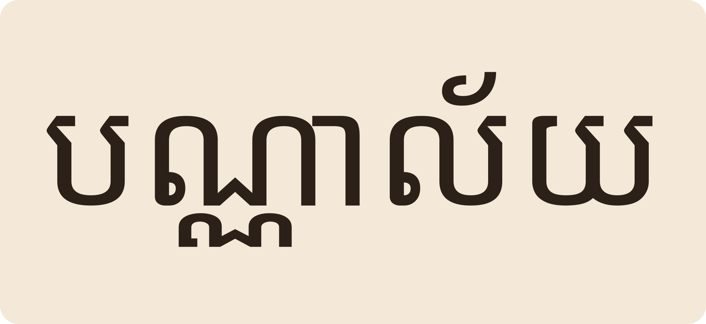
«បណ្ណាល័យ» library។ អ្នកកូមិខ្ញុំនាំគ្នាចូលអានសៀវភៅនៅមជ្ឈមណ្ឌលសិក្សា។
បណ្ណាល័យ “library”. My neighbours read together at the learning centre.
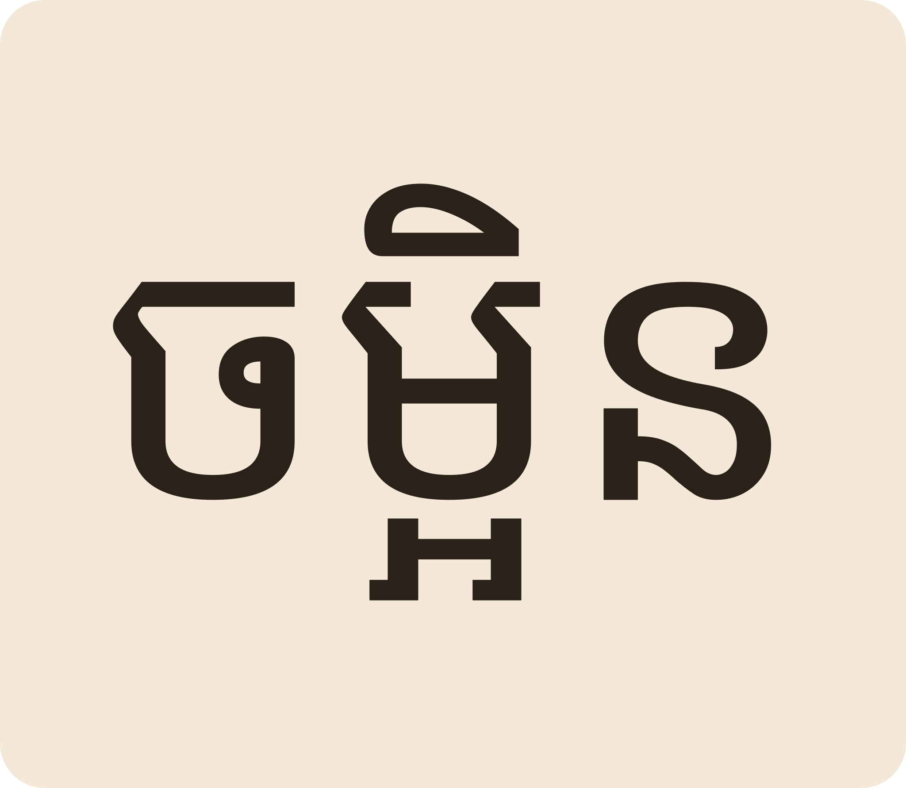
ត្រូវលាងបន្លែ និងសាច់ឱ្យបានស្អាត រួចចម្អិនឱ្យបានឆ្អិនល្អ។ ការពារធូលី។
Wash vegetables and meat well, then cook them thoroughly. Keep dust off.
«ប» ក្លាយពួកអ៊ ដូច្នេះ «ប៊ូ» សំឡេងបែប «បូ» ទាប។ សរសេរ «សប៊ូ» ខុស។
The ប becomes â-family, so the second beat sits lower. Writing សប៊ូ without ៊ is wrong.
សំឡេងប្រហាក់ប្រហែល តែ «ជ័យ» victory (បាលី) «ជៃ» a type of tree។ ន័យខុសគ្នា។
Similar sound, different words: ជ័យ victory vs ជៃ a tree species.
ប៊ីដុង ballpoint pen, តៅហ៊ូ dried fish, អ៊ូអរ lively, ហ៊ាន to dare។
ប៊ីដុង pen, តៅហ៊ូ dried fish, អ៊ូអរ lively, ហ៊ាន to dare.
អំពៅលូត់ស្អាត។ «យើងនាំគ្នាសម្អាតបង្គន់អនាម័យជានិច្ច»។
Sanitation. “Let's always keep the latrine clean.”
ជាធម្មតាបាន។ នៅកន្លែងសាធារណៈគេពេញនិយម «បន្ទប់ទឹក» ជាង។
It's normal; in public places people often prefer បន្ទប់ទឹក “washroom”.
Tap a word's play button to hear it. Hide one side, then recall it before you tap to check.
«៊» (សញ្ញាត្រីស័ព្ទ) ដាក់ពីលើព្យញ្ជនៈពួកអ ធ្វើឱ្យវាក្លាយសំឡេងពួកអ៊។ «សាប៊ូ» soap។ «យើងត្រូវលាងដៃនឹងសាប៊ូ មុនពេលញ៉ាំចំណីអាហារ»។ «ស៊ុត» egg។ មីងដែតទៅផ្សារថ្មី ទិញត្រីតៅហ៊ូ និងស៊ុត។ «កៅស៊ូ» rubber។ គ្រួសារតាអ៊ូដាំដំណាំកៅស៊ូ។
The whisker ៊ sits on an a-family letter and flips its sound to the â-family. សាប៊ូ “soap”. Wash hands with soap before eating. ស៊ុត “egg”. Aunti Daet buys dried fish and eggs at the new market. កៅស៊ូ “rubber”. Ta Ou's family plants rubber trees.
«័» (ម្តុសញ្ញាផាត់លើ) នៅពីលើព្យញ្ជនៈចុងពាក្យបាលី ដូចជា «ជ័យ» victory។ «កងទ័ព» army «ទាញព្រ័ត្រ» tug-of-war។ លេងនៅថ្ងៃចូលឆ្នាំ។ «បណ្ណាល័យ» library។ អ្នកកូមិខ្ញុំនាំគ្នាចូលអានសៀវភៅនៅមជ្ឈមណ្ឌលសិក្សា។
The crown ័ marks Pali-style endings: ជ័យ “victory”. កងទ័ព “army”; ទាញព្រ័ត្រ is the New Year tug-of-war game. បណ្ណាល័យ “library”. My neighbours read together at the learning centre.
ត្រូវលាងបន្លែ និងសាច់ឱ្យបានស្អាត រួចចម្អិនឱ្យបានឆ្អិនល្អ។ ការពារធូលី។
Wash vegetables and meat well, then cook them thoroughly. Keep dust off.
Q. «សាប៊ូ» អាន «សា-បូ» ឬ «សា-ប៊ូ»?
Q. How does the ៊ change សាប៊ូ?
A. «ប» ក្លាយពួកអ៊ ដូច្នេះ «ប៊ូ» សំឡេងបែប «បូ» ទាប។ សរសេរ «សប៊ូ» ខុស។
A. The ប becomes â-family, so the second beat sits lower. Writing សប៊ូ without ៊ is wrong.
Q. «ជ័យ» និង «ជៃ» ដូចគ្នាទេ?
Q. Are ជ័យ and ជៃ the same?
A. សំឡេងប្រហាក់ប្រហែល តែ «ជ័យ» victory (បាលី) «ជៃ» a type of tree។ ន័យខុសគ្នា។
A. Similar sound, different words: ជ័យ victory vs ជៃ a tree species.
Q. ពាក្យមាន «៊» មានអ្វីខ្លះទៀត?
Q. What other words use ៊?
A. ប៊ីដុង ballpoint pen, តៅហ៊ូ dried fish, អ៊ូអរ lively, ហ៊ាន to dare។
A. ប៊ីដុង pen, តៅហ៊ូ dried fish, អ៊ូអរ lively, ហ៊ាន to dare.
Q. «អនាម័យ» ន័យអ្វី?
Q. What does អនាម័យ mean?
A. អំពៅលូត់ស្អាត។ «យើងនាំគ្នាសម្អាតបង្គន់អនាម័យជានិច្ច»។
A. Sanitation. “Let's always keep the latrine clean.”
Q. «បង្គន់» ជាពាក្យសុភាពទេ?
Q. Is បង្គន់ polite to say?
A. ជាធម្មតាបាន។ នៅកន្លែងសាធារណៈគេពេញនិយម «បន្ទប់ទឹក» ជាង។
A. It's normal; in public places people often prefer បន្ទប់ទឹក “washroom”.
អាហារនេះស្អាតទេ?
Is this food clean?
ខ្ញុំឈឺពោះបន្តិច។
My stomach hurts a little.
Say it in your head first, then tap the box to check.